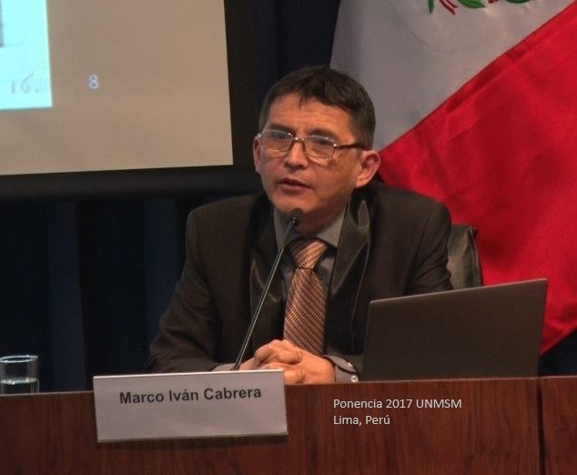
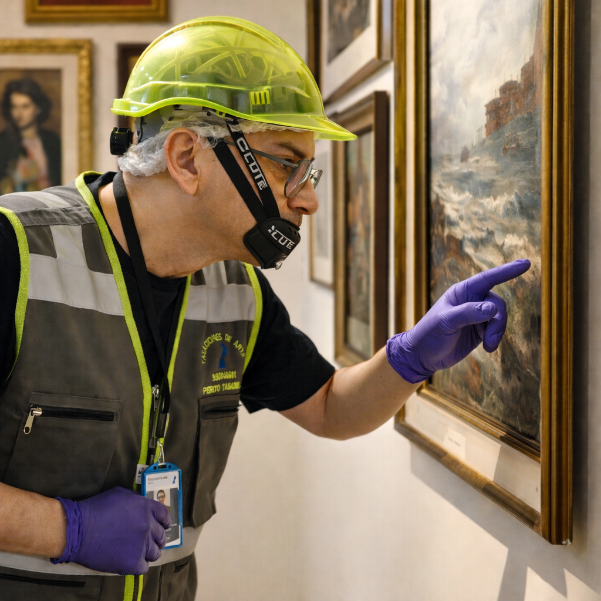

Tasador de obras de arte
Informes técnicos de tasación aplicables en ámbitos legales, comerciales y contables.
Respuestas a preguntas sobre el servicio de tasación
Formulario de consultaNosotros
Usted se encuentra en tasacionesdearte.org.pe, oficina virtual del Licenciado Marco Cabrera.
Si tiene un bien artístico o cultural y necesita conocer su valor comercial (precio), no dude en llamarnos.
Para atención inmediata, utilice el botón de WhatsApp.
Para trámites regulares, complete el Formulario de consulta.
El proceso se inicia con una consulta.
Sobre el tasador
MARCO IVÁN CABRERA H.
Licenciado en Arte
Magíster en Gestión Pública
Tasador de arte (inscripción)
Perito N.º 75 (Modificación 2026-05-15)


Nuestro servicio
Elaboramos informes técnicos de tasación de obras de arte, con firma de profesional acreditado, válidos para fines legales, comerciales, contables, seguros, financieros, patrimoniales, impuestos y aranceles.
Peritaje y autentificación.

Revisión directa
Revisión de los bienes in situ.
Caracterización específica según necesidad de la obra.

Metodología
Reglamento Nacional de Tasaciones (RNT).
Procedimiento Internacional de Peritaje de obras de arte.
Absoluta confidencialidad
¿Cuándo se requiere una tasación?
Compra y venta
Herencias y sucesiones
Seguros
Valoración financiera de arte
Procesos judiciales
Impuestos y aranceles
Casos administrativos y de gestión pública
Metodología
Consultoría de Gestión
Contabilidad pública (NICSP)
Auditorías administrativas y patrimoniales
Consúltenos su caso y reciba una orientación profesional.


.jpg)